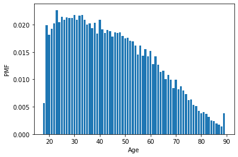
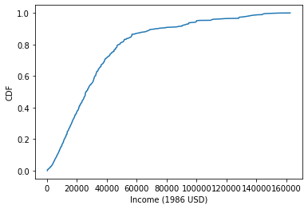
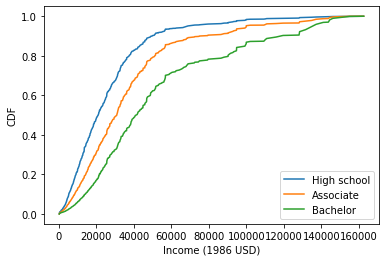
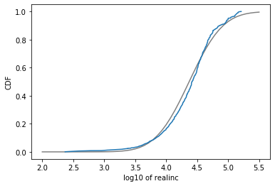
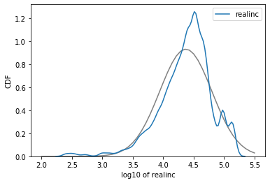

import pandas as pd
import numpy as np
import matplotlib.pyplot as plt
import seaborn as sns
from empiricaldist import Pmf, Cdf
from scipy.stats import normTL;DR
A Summary of lecture “Exploratory Data Analysis in Python”, via datacamp
Probability mass functions
gss = pd.read_hdf('./dataset/gss.hdf5', 'gss')
gss.head()| year | age | cohort | sex | race | educ | realinc | gunlaw | grass | wtssall | |
|---|---|---|---|---|---|---|---|---|---|---|
| 0 | 1972 | 26.0 | 1946.0 | 1 | 1 | 18.0 | 13537.0 | 2.0 | NaN | 0.8893 |
| 1 | 1972 | 38.0 | 1934.0 | 2 | 1 | 12.0 | 18951.0 | 1.0 | NaN | 0.4446 |
| 2 | 1972 | 57.0 | 1915.0 | 1 | 1 | 12.0 | 30458.0 | 1.0 | NaN | 1.3339 |
| 3 | 1972 | 61.0 | 1911.0 | 2 | 1 | 14.0 | 37226.0 | 1.0 | NaN | 0.8893 |
| 4 | 1972 | 59.0 | 1913.0 | 1 | 1 | 12.0 | 30458.0 | 2.0 | NaN | 0.8893 |
Make a PMF
year = gss['year']
# Compute the PMF for year
pmf_year = Pmf.from_seq(year, normalize=False)
# Print the result
print(pmf_year)1972 1613
1973 1504
1974 1484
1975 1490
1976 1499
1977 1530
1978 1532
1980 1468
1982 1860
1983 1599
1984 1473
1985 1534
1986 1470
1987 1819
1988 1481
1989 1537
1990 1372
1991 1517
1993 1606
1994 2992
1996 2904
1998 2832
2000 2817
2002 2765
2004 2812
2006 4510
2008 2023
2010 2044
2012 1974
2014 2538
2016 2867
Name: year, dtype: int64Plot a PMF
# Select the age column
age = gss['age']
# Make a PMF of age
pmf_age = Pmf.from_seq(age)
# Plot the PMF
pmf_age.bar()
# Label the axes
plt.xlabel('Age')
plt.ylabel('PMF')Text(0, 0.5, 'PMF')
Cumulative distribution functions
Make a CDF
# Select the age column
age = gss['age']
# Compute the CDF of age
cdf_age = Cdf.from_seq(age)
# Calculate the CDF of 30
print(cdf_age(30))
print(1 - cdf_age(30))0.2539137136526389
0.7460862863473612Compute IQR
income = gss['realinc']
cdf_income = Cdf.from_seq(income)# Calculate the 75th percentile
percentile_75th = cdf_income.inverse(0.75)
# Calculate the 25th percentile
percentile_25th = cdf_income.inverse(0.25)
# Calculate the interquartile range
iqr = percentile_75th - percentile_25th
# Print the interquartile range
print(iqr)29676.0Plot a CDF
# Plot it
cdf_income.plot()
# Label the axes
plt.xlabel('Income (1986 USD)')
plt.ylabel('CDF')Text(0, 0.5, 'CDF')
Comparing distribution
Extract education levels
# Select educ
educ = gss['educ']
# Bachelor`s degree
bach = (educ >= 16)
# Associate degree
assc = ((educ >= 14) & (educ < 16))
# High school (12 or fewer years of education)
high = (educ <= 12)
print(high.mean())0.5308807991547402Plot income CDFs
income = gss['realinc']
# Plot the CDFs
Cdf.from_seq(income[high]).plot(label='High school')
Cdf.from_seq(income[assc]).plot(label='Associate')
Cdf.from_seq(income[bach]).plot(label='Bachelor')
# Label the axes
plt.xlabel('Income (1986 USD)')
plt.ylabel('CDF')
plt.legend()
plt.savefig('../images/income-cdf.png')
Modeling distributions
Distribution of income
# Extract realinc and compute its log
log_income = np.log10(income)
# Compute mean and standard deviation
mean = np.mean(log_income)
std = np.std(log_income)
print(mean, std)
# Make a norm object
dist = norm(mean, std)4.371148677933652 0.4290043733010077Comparing CDFs
# Evaluate the model CDF
xs = np.linspace(2, 5.5)
ys = dist.cdf(xs)
# Plot the model CDF
plt.plot(xs, ys, color='gray')
# Create and plot the Cdf of log_income
Cdf.from_seq(log_income).plot()
# Label the axes
plt.xlabel('log10 of realinc')
plt.ylabel('CDF')Text(0, 0.5, 'CDF')
# Evaluate the model CDF
xs = np.linspace(2, 5.5)
ys = dist.pdf(xs)
# Plot the model CDF
plt.plot(xs, ys, color='gray')
# Plot the data KDE
sns.kdeplot(log_income)
# Label the axes
plt.xlabel('log10 of realinc')
plt.ylabel('CDF')Text(0, 0.5, 'CDF')